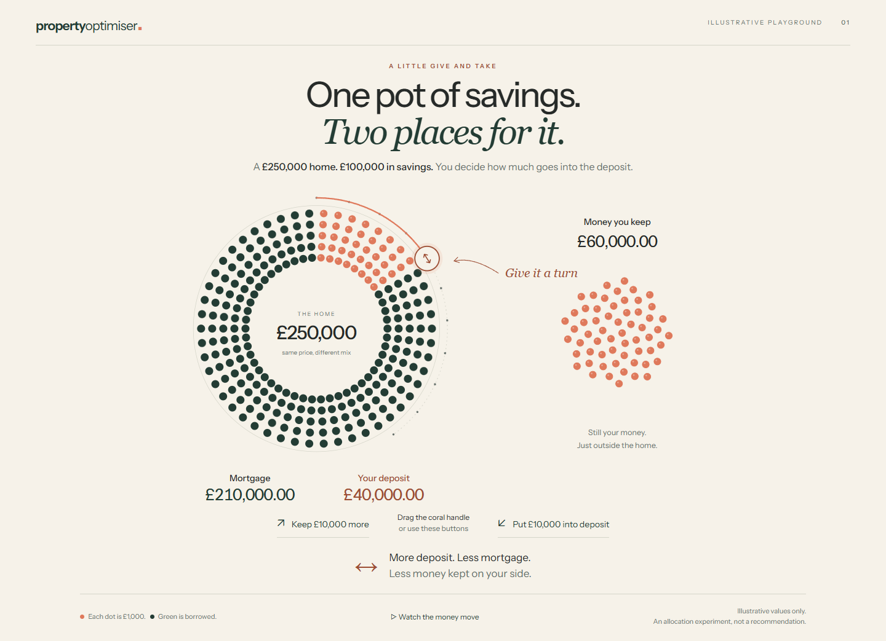
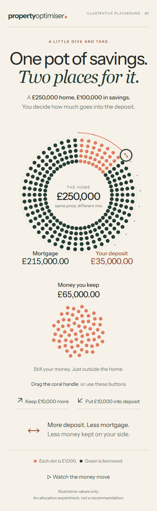
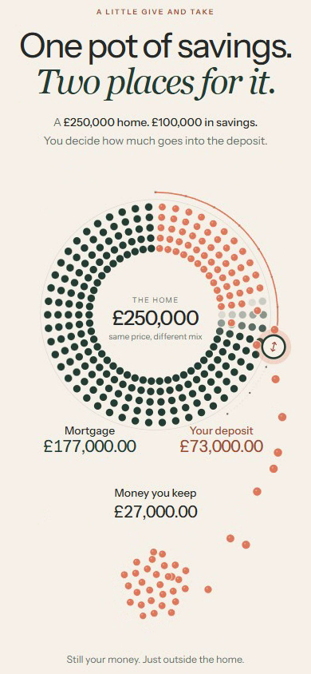

A LITTLE GIVE AND TAKE
One pot of savings.
Two places for it.
A standalone animation exploring how a buyer divides savings between a deposit and money retained outside the home. This page contains the live experiment and the evidence needed to review it.
Illustrative values only. Visual and educational comprehension approval is pending.
What this interaction should explain
Imagine a £250,000 home and £100,000 in savings. Drag the coral handle clockwise to put more into the deposit. The same savings tokens travel into the purchase, replacing mortgage borrowing. Turn it back to retain more money outside the home.
Each dot represents £1,000. Coral represents the buyer’s savings and green represents borrowing. The opening allocation is a £40,000 deposit, £60,000 retained and a £210,000 mortgage. The home price stays fixed.
The prototype offers 101 illustrative allocations in £1,000 steps. Deposit + retained money = £100,000; deposit + mortgage = £250,000. These are illustrative allocation identities, not purchase eligibility checks or recommendations. Costs, tax, rates, repayments and investment returns are outside this interaction.
Why this is a new attempt
The previous four-stage design was rejected because it felt like static financial diagrams with changing labels. This experiment replaces its house illustration and rectangular savings container with direct manipulation and identifiable money tokens. It retains the Warm Editorial visual language: ivory, forest green, coral and spacious typography.
The eventual product is intended to explain both retained initial investments and monthly savings made possible by lower mortgage repayments. Those effects are not shown here. Only this first interaction is ready for review; subsequent stages await owner approval.
Actual browser recordings
These are recordings of the working browser prototype. The desktop sequence uses mouse dragging; the phone sequence uses browser touch emulation. A reviewer should say whether it could inspect the motion or only the still images.
Desktop: move, reverse, take control
Open or download desktop video
Phone: the interaction recomposed for touch
Open or download phone video. The final gesture is cancelled deliberately to check that the handle releases correctly.
Rendered screenshots and a motion frame
These direct image links are available for visual review when a chat cannot inspect the interactive page or video.






Review this interaction
Useful questions are whether a novice can discover the trade-off through manipulation, whether the transfer is easy to follow, and whether composition and motion feel deliberate. Software test results do not establish educational comprehension or aesthetic quality.
Review this Property Optimiser allocation study. Read the context and handover, inspect the screenshots, and try the playground or watch the recordings if your tools allow it. State which evidence you actually inspected. Assess direct manipulation, motion choreography, composition, readability and mobile behaviour. Explain whether a novice can discover that a larger deposit reduces both retained money and mortgage borrowing. Give specific visual improvements. Review only this first interaction; do not expand into later stages or financial modelling.